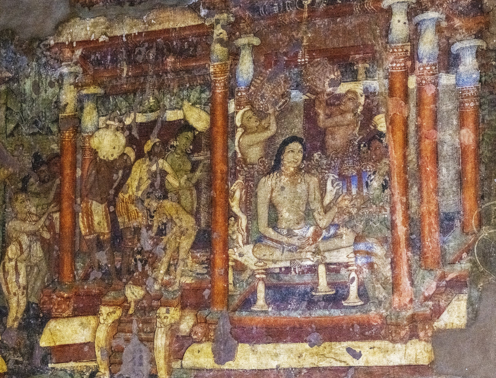
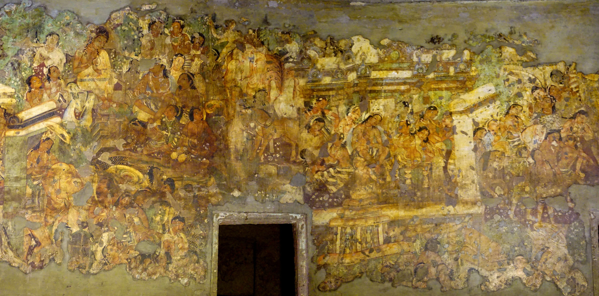

वीर्य
Vīriya: effort
In the sea, effort is valued even without a reward in sight. That is why the goddess panel is the biggest frame in Chapter II, shot from a low angle so the swimmer looks heroic.

The king who walked away: a fifteen-hundred-year-old story, retold one panel at a time.
Around 470 CE, monks and painters at Ajanta covered the left wall of Cave 1 with one long scene of the Mahājanaka Jātaka. There are no frames and no words. The same king appears again and again as the story moves through palace rooms, courtyards and gateways. Art historians call this continuous narration.

Our version cuts the wall into a comic: eighteen panels in five chapters, read left to right and top to bottom, with captions and speech bubbles.
Switch to the Director's cut to see the same panels as a film storyboard, with shot sizes, camera moves, timing and sound.
Press Play the animatic and the storyboard plays as a short film, with camera moves and subtitles. Space pauses; arrow keys skip.
A Jātaka is a story of one of the Buddha's earlier lives. In this one he is born a prince without a kingdom.
Panels marked with a source label are details of the real mural. You can click any of them to see it in full. The episodes that no longer survive on the wall are drawn as new illustrations.
Eighteen shots, five chapters, about 2:30. This is the storyboard played as a moving animatic, with camera moves, subtitles and a drone in the background.
The Buddha told this story at Jetavana while speaking about his own Great Renunciation. Mahājanaka stands for vīriya, the perfection of effort. He swims for seven days with no shore in sight, and he puts down a kingdom once he has seen what it costs.
Reimagining the mural meant deciding what each moment means. These four ideas shaped how every panel was framed.
In the sea, effort is valued even without a reward in sight. That is why the goddess panel is the biggest frame in Chapter II, shot from a low angle so the swimmer looks heroic.
The king leaves at the peak of his power, not in defeat. The bath panel is the calmest face in the book because the decision is made inside him.
The fruit-laden mango tree is torn apart, while the barren one stands whole. We gave it a split, symmetrical frame, the one moment where the story divides.
Sīvalī's grief and anger are the story's counterweight. Ajanta paints the palace women with great tenderness, so her panels use only the real mural.
| How Ajanta tells it | How we tell it | |
|---|---|---|
| Format | One continuous wall. Many moments share one surface, and the hero appears again and again. | Eighteen separate panels in five chapters, each holding one moment. |
| Time | Moments are arranged by place: rooms, courtyards and gateways. The viewer pieces the order together. | Strict reading order, left to right and top to bottom, plus a timed animatic. |
| Words | None on the wall. Monks and guides told the story aloud to visitors. | Narration captions, speech and thought bubbles, and sound effects. |
| Viewpoint | Shifting, many-angled space. Figures are sized by importance, not by distance. | Film grammar: shot sizes, low angles, a Dutch tilt for the shipwreck, push-ins for decisions. |
| Medium | Mineral pigments (ochres, lamp black, lime white, green earth, imported lapis lazuli) on dry lime plaster. | Photographic details of the same mural, and new SVG illustrations in that same palette. |
| Audience | Monks and pilgrims walking the hall of a monastery (vihāra), seeing it by lamplight. | A reader with a screen, lamplight and all: the cursor is the lamp on the title page. |